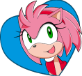
this isnt completed!:) come back later
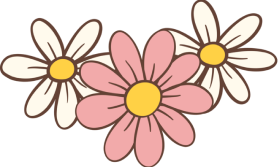
Hi!! My name is Stella Catherine Di Zazzo, and I'm a student at Vanier, currenlty studying in multimedia!
My main inspirations/aesthetics are anything retro/vintage (think 60s-80s), the 90s-early 2000s styles and early video games:) feel free to check some of my work out!❤︎
here is my work during my semesters in Multimedia:D check them out!
If you know me you most certainly know my love for Sonic the Hedgehog:) you can see me explain it more in dept HERE!!! (It's pretty long, I know...)
My favourite characters are Amy Rose, Silver, Shadow, Sonic and Rouge!
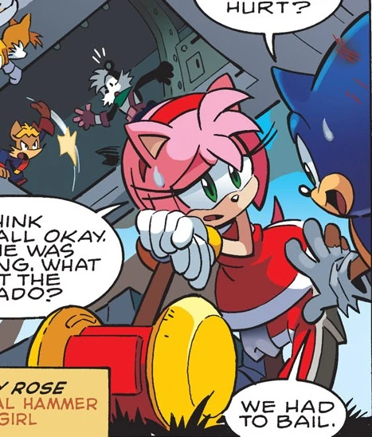
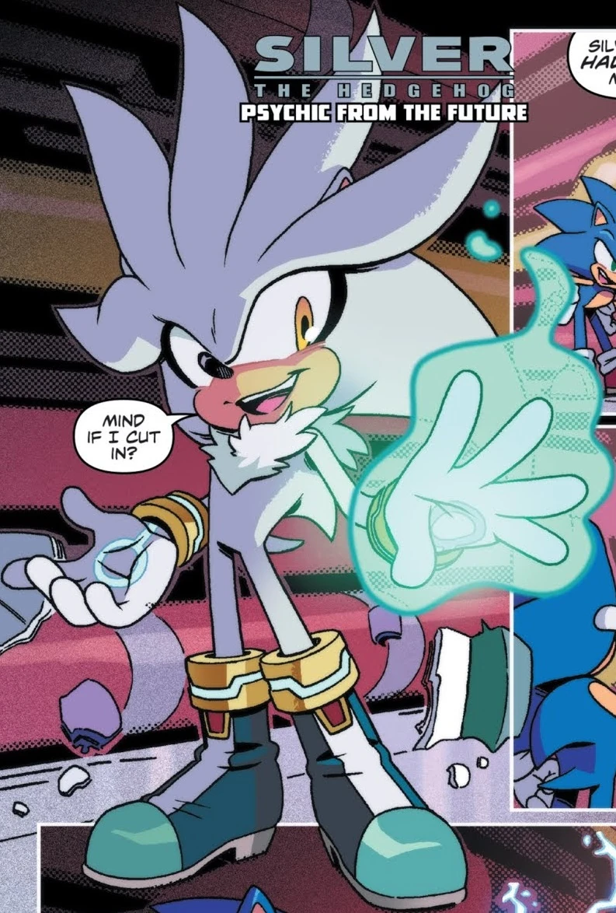
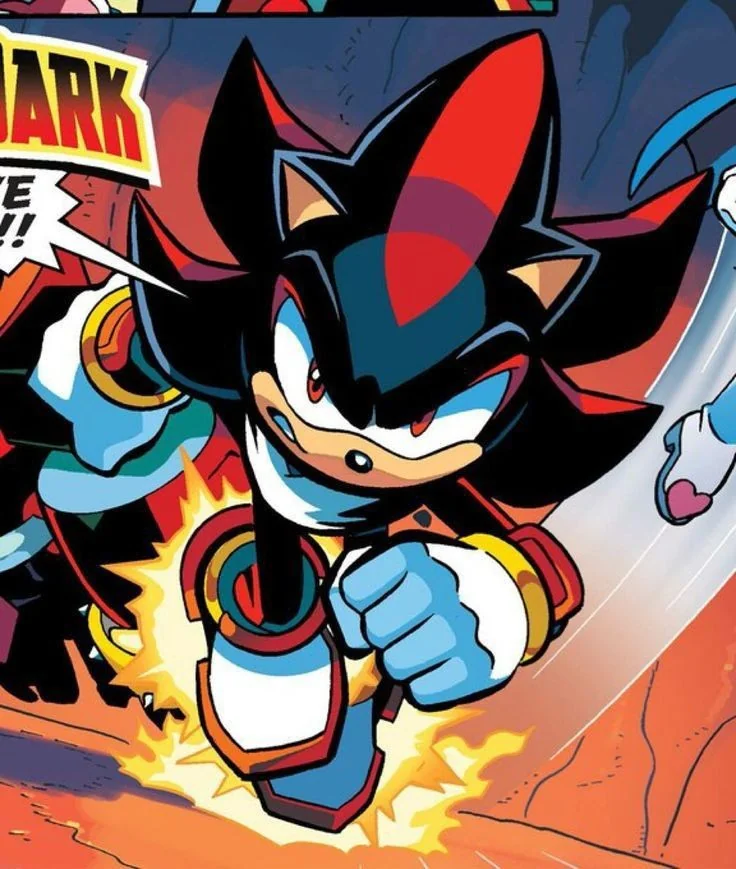
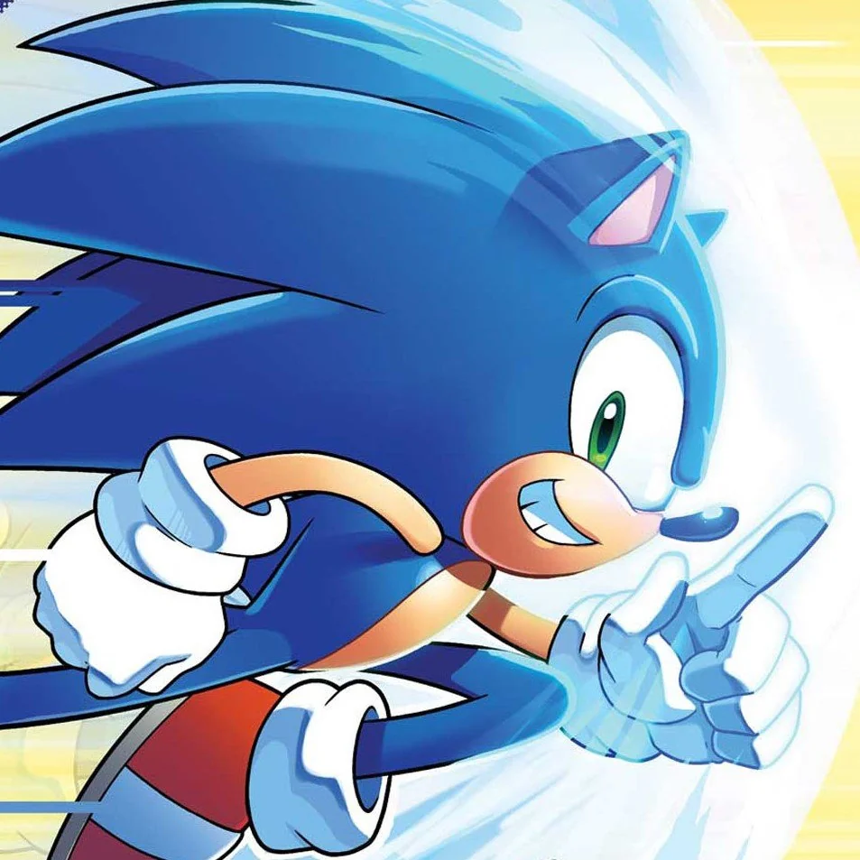
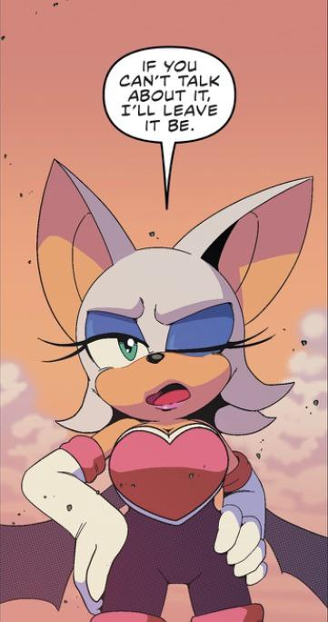
other than sonic, I love My little Pony a lot! Mostly generation 4 (the most popular one). My favourite characters are Rainbow Dash, Rarity (both share first place), Applejack, Pinkie Pie (my childhood favourite) and Fluttershy!
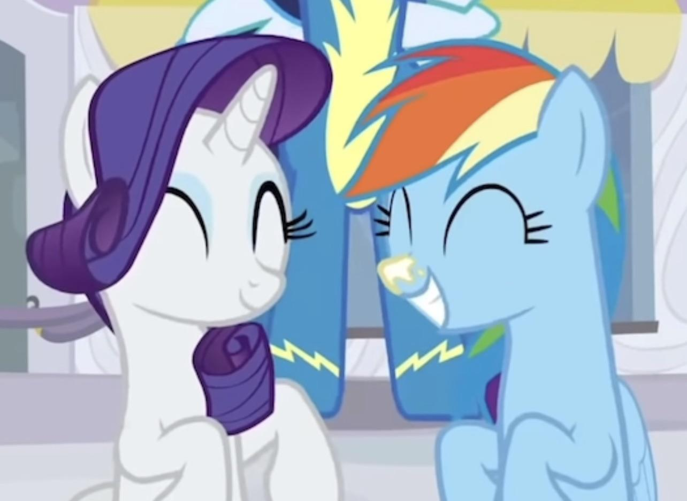
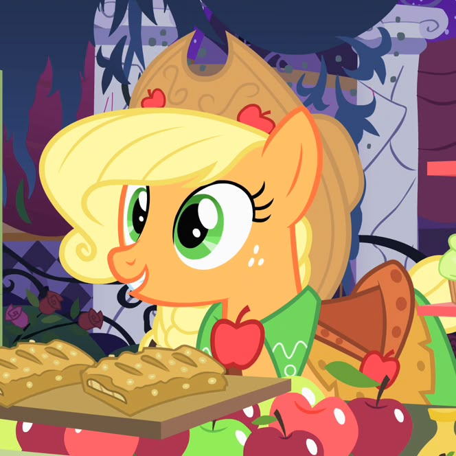
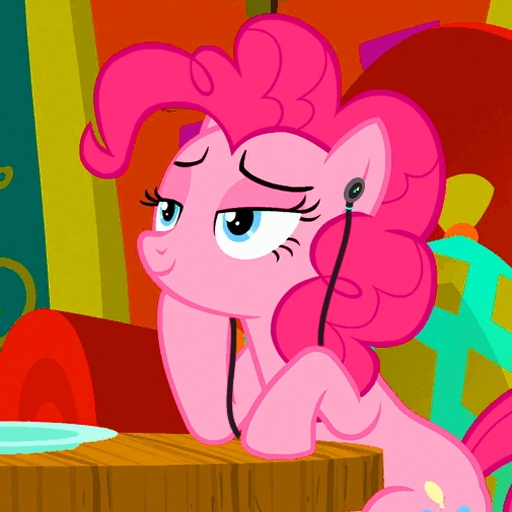
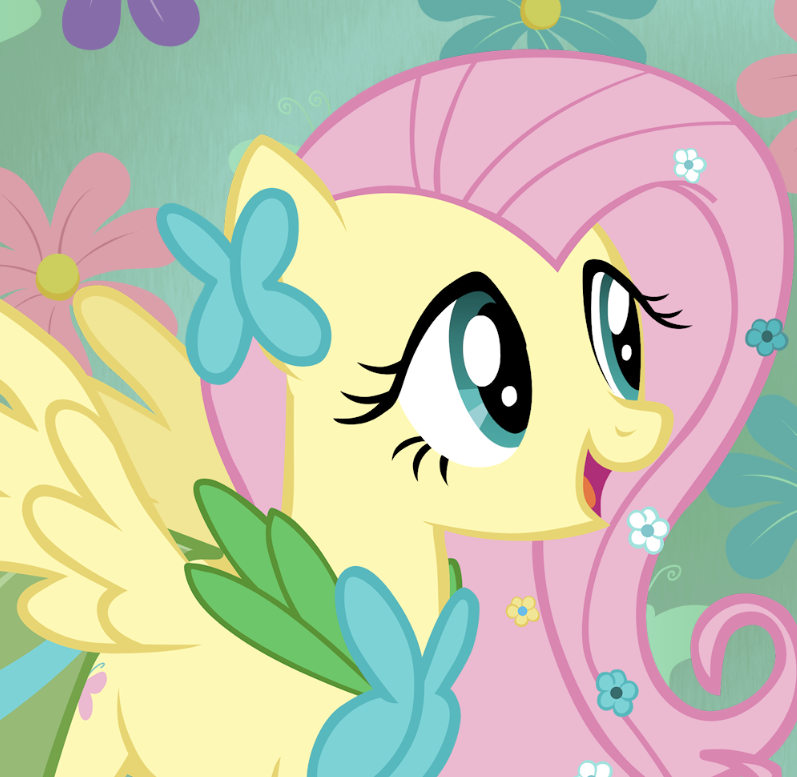
Finally, I also like Scott Pilgrim (the comic, specifically).
My favourite characters are Ramona Flowers, Kim Pine and Wallace Wells
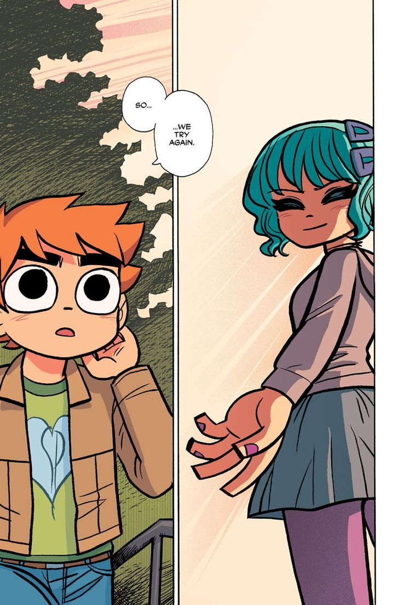
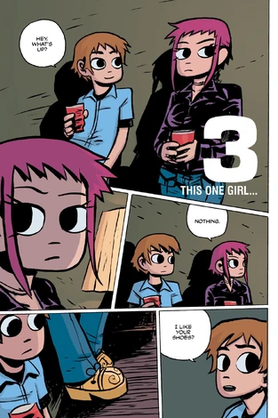
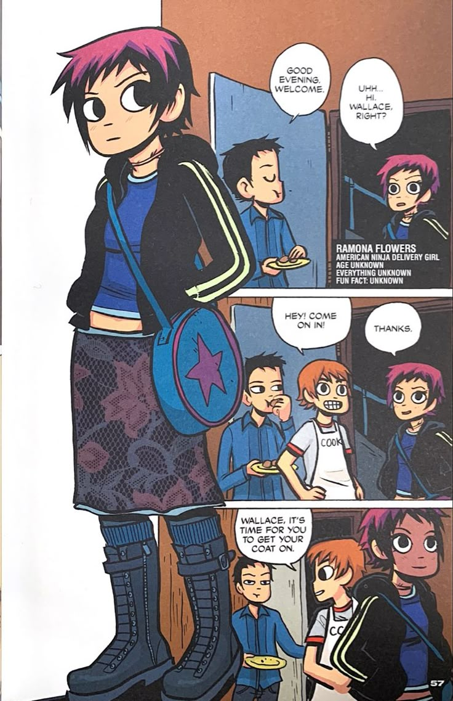
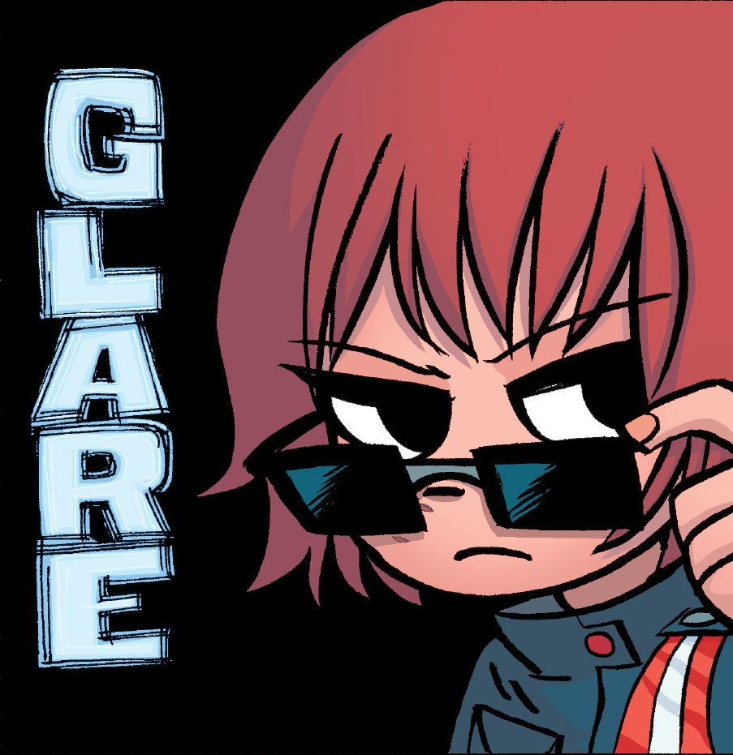
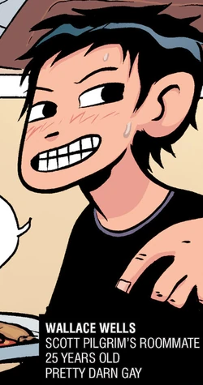